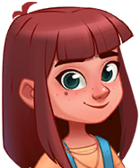
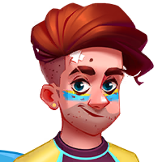
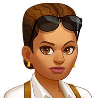
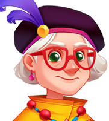
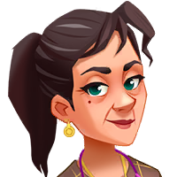
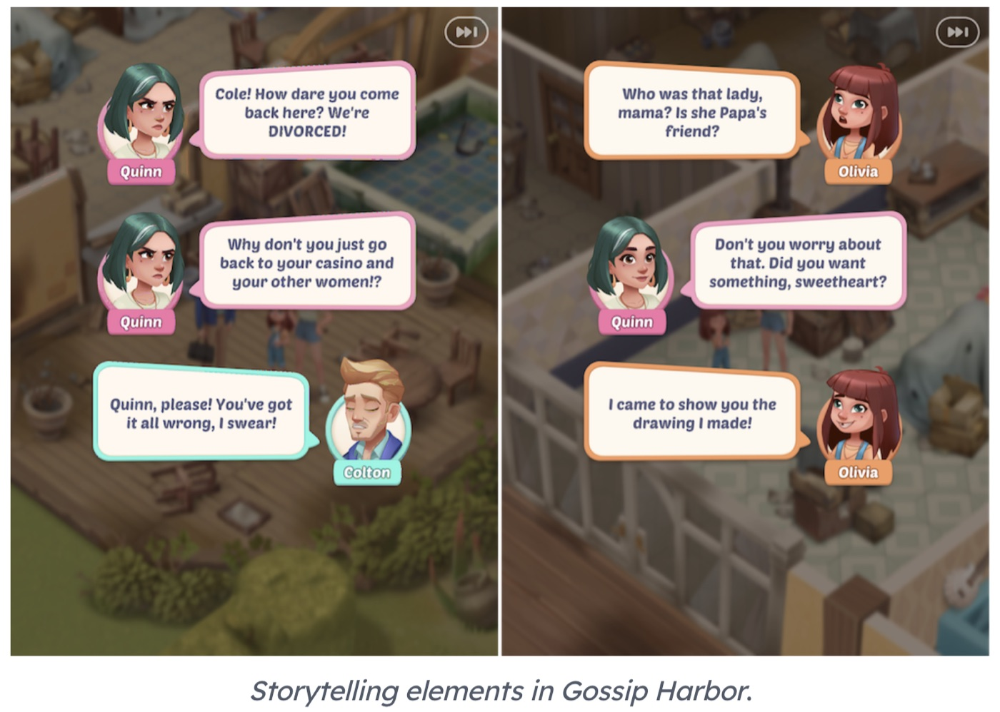
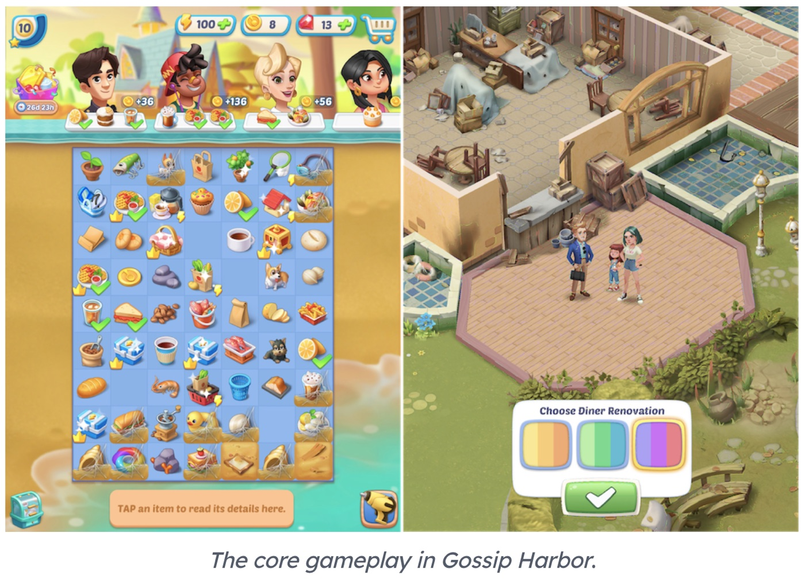
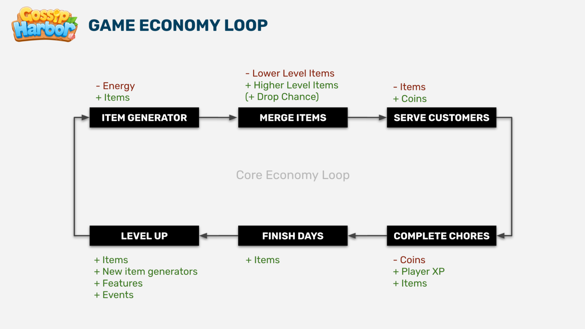
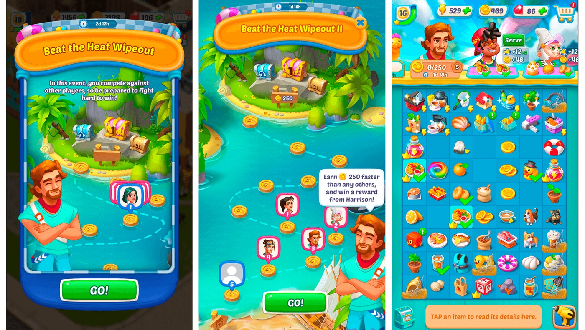
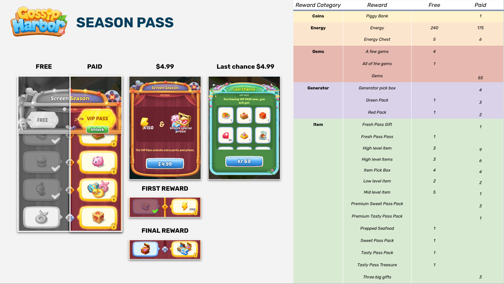

머지 신작 벤치마크 게임 설명서 — Gossip Harbor 중심
참고 게임 구성 — 무엇을 어디서 가져오나
| 역할 | 게임 | 참고 포인트 |
|---|---|---|
| 전체 골자 | Gossip Harbor (Microfun, 모바일) | 코어 루프 · 오더/에너지 경제 · 스토리 구조 · 라이브옵스 — 이 문서의 본문 |
| 꾸미기 2D | Love & Pies (Trailmix, 모바일) | 아이소메트릭 3D풍이 아닌 2D 카툰 꾸미기 연출 — 우리 원화 물량에 현실적인 방식 |
| 인스턴트게임 | Piece of Cake: Merge & Bake (fb.gg/play/instacake) | 같은 FB Instant 플랫폼에서 실제 돌아가는 머지-2 — 스펙 하한선 확인용 |
| Merge Haven (fb.gg/play/mergehaven) | 카페 복원 + 스토리를 인스턴트 규격에 맞춘 사례 — 웹/인스턴트 빌드 참고 |
게임 개요 — Gossip Harbor
| 항목 | 내용 |
|---|---|
| 타이틀 | Gossip Harbor®: Merge & Story |
| 개발/퍼블리셔 | Microfun Limited (중국) |
| 출시 | 2021년 글로벌 런칭 (iOS·Android) |
| 장르 | 머지-2 (Merge-2) — 보드 위 아이템 2개 합성 + 스토리 + 공간 복원 |
| 포지셔닝 | 머지-2 장르 매출 최상위권. 출시 후 이벤트를 월 20종 → 100종까지 늘리며 성장한 라이브옵스 교과서 |
| 타겟 | 30~50대 여성 중심 캐주얼 — 드라마성 강한 스토리(이혼·미스터리·로맨스)가 핵심 훅 |

스토리라인
시놉시스 — 주인공 퀸(Quinn Castillo)은 남편 콜튼(Colton)과 이혼한 뒤 딸 올리비아(Olivia)를 데리고 고향 브림웨이브 섬(Brimwave Island)으로 돌아옵니다. 그런데 도착하자마자 아버지의 레스토랑이 식중독 사건으로 문을 닫고, 이어 보트 충돌 등 연쇄 사보타주가 터집니다. 퀸은 레스토랑을 복구하면서(=플레이어의 머지·복원 플레이) 범인을 추적합니다.
- 1막 — 귀향과 사건: 이혼 직후 귀향 → 식중독으로 레스토랑 붕괴 → 처음엔 전남편 콜튼이 범인으로 몰림.
- 2막 — 미스터리: 콜튼은 누명을 주장. 조사 끝에 섬 뒤에서 암약하는 비밀 조직 「Bitter Gnomes」가 드러남 — 직원 라일리를 매수해 음식에 독을 넣고, 밴스에게 돈을 줘 보트를 레스토랑에 충돌시키는 등 섬 전체를 협박·조종.
- 3막 — 로맨스와 배신: 연인 후보 해리슨(Harrison)과 가까워지지만, 그는 병든 아버지를 볼모로 잡은 Bitter Gnomes의 압박에 퀸을 배신. 콜튼과는 공동 양육 관계로 재정립.
- 결말 없음: 스토리는 주 단위로 계속 추가되는 연속극 구조 — 완결이 아니라 "다음 화"가 리텐션 장치입니다.

스토리를 영상으로 보려면


주요 등장인물
대사창 옆 원형 초상으로 등장하는 캐릭터들입니다. 아래 이미지는 실제 게임 리소스에서 추출한 아바타 원본입니다.






코어 게임플레이
한 문장으로: 생성기를 탭해 아이템을 뽑고 → 같은 것 2개를 머지해 상위 아이템을 만들고 → 손님 주문에 납품해 코인·경험치를 벌고 → 그 돈과 진행도로 레스토랑을 복원하면 스토리가 열립니다.


핵심 룰 요약 (APK 리버싱 확인값)
| 시스템 | 동작 방식 |
|---|---|
| 재화 3종 | 에너지(생산 동력) · 코인(소프트) · 젬(하드). 에너지 최대 100, 120초당 1 회복 |
| 머지 | 같은 Type 2개 → 상위 1개. 머지 자체는 에너지 무소모 — 에너지는 생성기 탭에만 듭니다 |
| 생성기 | 탭 1회 = 에너지 1. 가중 랜덤 산출 + 보드 재고/창고 2단 재고. 젬으로 타이머 스킵 가능 |
| 럭키 생산 | 순수 확률이 아닌 카운터 pity — 예: 60회 생산당 1회는 반드시 상위 아이템 |
| 버블 | 머지 산출물이 확률적으로 포장돼 나옴 → 젬으로 해제, 방치 시 60초 후 소멸. 비과금자에겐 확률을 낮추는 DDA 내장 |
| 오더(주문) | 레벨별 3티어 아이템 풀에서 생성, 난이도 총합 상한 300. 보상 = 아이템 가격 합(코인) + 이벤트 포인트 + XP |
| 레벨 | 오더·태스크 XP로 상승 (필요치 30에서 +15씩 선형). 인벤토리 Lv2 · 상점 Lv3 · 버블 Lv4 해금 |
| 진행 뼈대 | 메인태스크 3,937개가 지역·일차(Day) 단위로 스토리와 맞물려 진행 |
라이브옵스 · 이벤트
Gossip Harbor 성장의 절반은 이벤트 운영입니다. 출시 초 월 20종이던 이벤트를 월 100종까지 늘렸고, 수집·경쟁·부스트·시즌패스가 상시 겹쳐 돌아갑니다.


꾸미기 2D 참고 — Love & Pies
| 항목 | 내용 |
|---|---|
| 타이틀 | Love & Pies — Merge Mystery |
| 개발 | Trailmix Ltd (런던 · Supercell 투자사) · 2021년 9월 글로벌 런칭 |
| 장르 | 머지-2 + 카페 복원 + 미스터리 스토리 — Gossip Harbor와 구조 동일 |
| 왜 참고하나 | 복원 씬이 아이소메트릭 3D풍이 아니라 평면 2D 카툰. 밝은 파스텔 톤 + 굵은 외곽선 스타일이라 원화 1인 체제로도 따라갈 수 있는 물량·난도입니다. 꾸미기(데코·배경) 연출은 이쪽을 기준으로 삼습니다 |
스토리 — 싱글맘 아멜리아(Amelia)가 딸 케이트와 함께 고향에 돌아오니, 엄마 프레야의 윈드밀 카페가 방화로 전소되고 엄마는 실종된 상태. 카페를 복원하며 방화범과 괴도 「퍼플 폭스(The Purple Fox)」의 정체를 쫓고, 고교 시절 전 남자친구 등 주민들과 로맨스가 얽힙니다. "귀향 → 가게 붕괴 → 복원 + 미스터리 + 로맨스" — Gossip Harbor와 같은 공식이라, 두 게임을 비교하면 장르 문법이 또렷하게 보입니다.


인스턴트게임 참고 — FB Instant에서 돌아가는 머지-2
우리 신작은 FB·IG Instant Games(HTML5) 타겟이라, 네이티브 앱인 위 두 게임과 별개로 같은 플랫폼에서 실제 서비스 중인 머지-2를 참고합니다. 아래 링크는 페이스북 앱/웹에서 바로 실행됩니다.
| 게임 | 실행 | 참고 포인트 |
|---|---|---|
| Piece of Cake: Merge & Bake HG DEVS |
fb.gg/play/instacake | 재료 머지 → 디저트 제작 + 공간 복원 + 가족 비밀 스토리. 인스턴트 규격에서 머지 보드·로딩·해상도가 어디까지 가능한지 하한선 확인용 |
| Merge Haven | fb.gg/play/mergehaven | 주인공 리자(Liza)의 낡은 카페 복원 + 오더·별 수집으로 리노베이션 단계 해금. 웹/인스턴트 멀티 플랫폼 배포 사례 — 스토리+복원을 인스턴트에 욱여넣은 구성 참고 |
우리 신작에 주는 시사점
- 스토리가 곧 리텐션 — 완결 없는 연속극 + "복원해야 다음 화가 열린다"는 구조. 신작도 챕터·회상 CG를 이 리듬에 맞춰야 합니다.
- 코어는 단순, 수익 장치는 정교 — 룰은 10분이면 배우지만 버블 DDA·pity·봇 경쟁이 뒤에서 돌아갑니다. 밸런스 시트에 처음부터 반영 필요.
- 이벤트는 껍데기 회전 — 코어 보드는 고정, 배경 맵·전신 일러스트·보상 트랙만 갈아끼우는 구조라 월 수십 종 운영이 가능합니다. 원화 물량 산정(별도 문서)도 이 전제를 따릅니다.
- 구조는 Gossip Harbor, 그림은 Love & Pies — 시스템·경제는 GH를 따르되, 꾸미기 연출은 2D 카툰(L&P 방식)으로 낮춰 원화 물량과 인스턴트 성능 제약을 동시에 해결합니다.
- 플랫폼 하한선은 인스턴트 참고작으로 검증 — Piece of Cake·Merge Haven에서 로딩·보드 크기·UI 축약의 실전 기준을 잡습니다.
신작 세부 기획서 — 이어서 볼 문서
이 설명서가 "원작이 어떤 게임인가"라면, 아래는 그걸 우리 신작(가제 Vintage Lane)으로 어떻게 옮기는가입니다.
| 문서 | 내용 |
|---|---|
| 전략·사업성 | 벤치마킹 분석 · 시니어 여성 타겟 포지셔닝 · 경제 시뮬레이션 · 수익화 · 비즈니스 케이스 |
| 제품·프로덕션 | PRD · 아트 디렉션 · 시니어 테스트 계획 · 런칭 스펙 · 운영 캘린더 |
| SRS (요구사항 명세) | 기능 명세 26모듈 · 콘텐츠 물량(체인 21 · 아이템 120 · 생성기 9라인 · 14챕터) |
| 아웃게임 프로토타입 | 화면별 CSS 목업 + 요소 넘버링 + 레퍼런스 스크린샷 2단 비교 |
| 기획 트래커 | 작업 항목 체크리스트 (브라우저 저장) |
| 원화 제작 기간 문의 | 원화 216컷 분량 산정 · 솔리테어 대비 소요 기간 회신 요청 |
출처 · 더 읽을 것
- 스토리 요약 — Gossip Harbor Story Explained · Mobi.gg 전체 스토리 정리 · 공식 팬덤 위키 (Day별 스크립트)
- 스토어 — Gossip Harbor (Google Play) · Love & Pies (Google Play) · Love & Pies 공식 사이트
- Love & Pies 스토리 — 팬덤 위키 · TV Tropes
- 인스턴트 참고작 — Piece of Cake: Merge & Bake · Merge Haven
- 산업 분석 — Deconstructor of Fun 「Finding Genre Success: the Case of Gossip Harbor」 · AppMagic 「LiveOps Journey: From 20 to 100 Events a Month」 (사내 PDF 보관)
- 내부 자료 — APK 리버싱 게임 룰 문서(
extract/GAME_RULES.md) · 밸런스 시트 · 원화 제작 기간 문의